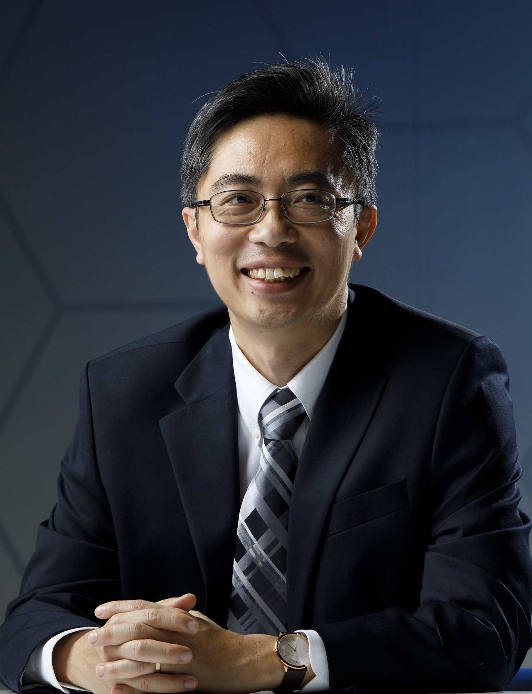

Technical Program
Note: All the times listed below are in JST
Wednesday, August 30, 2023
Thursday, August 31, 2023
| 09:30 |
NVMSA Keynote |
| 10:30 |
Break |
| 11:00 |
RTCSA-4: IoT, CPS, and Emerging Applications 1 |
NVMSA-4: Machine Learning in Memory |
| 12:30 |
Lunch Break |
| 14:00 |
Sponsor Talk |
| 15:00 |
Break |
| 15:30 |
RTCSA-5A: Real-Time Systems 2 |
RTCSA-5B: Embedded Systems 2 |
|
Banquet |
Friday, September 1, 2023
| 09:00 |
RTCSA-6: Real-Time Systems 3 |
(From 9:30) NVMSA-6: Tool and System Software |
| 10:30 |
Break |
| 11:00 |
RTCSA-7A: IoT, CPS, and Emerging Applications 2 |
RTCSA-7B: Short Presentations |
|
Closing |
NVMSA Keynote (August 31, 9:30 ~ 10:30)
Title: New Horizon in Persistent Memory Research
Speaker: Prof. Yan Solihin (University of Central Florida)

Abstract:
PM enables a new data abstraction where programmers keep persistent
data in memory-only data structures instead of files or file-backed
memory maps. We refer to this abstraction as Persistent Memory Objects
(PMO). While PMO allows fine-grain access at low latency to persistent
data, it also presents several challenges. Among these challenges are:
(1) new abstraction is needed to define its use, access, and sharing,
(2) security vulnerabilities that arise from keeping them in memory
instead of files, and (3) how it affects memory encryption and
integrity verification. In this talk, I will first discuss challenges
facing the PMO model and what approaches to solve them are possible.
Furthermore, non-volatile or persistent memory (PM)’s integration into
computer systems is undergoing changes. With Intel discontinuing
Octane DC persistent memory, several alternatives have emerged,
including soft persistent memory (battery/UPS-backed DRAM providing
persistency) and memory-semantic SSD. I will discuss my perspectives
on how these emerging alternatives affect research in persistent
memory.
Biography:
Yan Solihin is the Director of Cybersecurity and Privacy Cluster, and
Charles N. Millican* Professor of Computer Science at University of
Central Florida. He obtained B.S. in Computer Science from Institut
Teknologi Bandung in 1995, B.S. in Mathematics from Universitas
Terbuka in 1995, M.A.Sc in computer engineering from Nanyang
Technological University in 1997, and Ph.D. in computer science from
the University of Illinois at Urbana-Champaign (UIUC) in 2002. He was
a pioneer in cache sharing fairness and Quality of Service (QoS),
efficient counter mode memory encryption, and Bonsai Merkle Tree,
which have significantly influenced Intel Cache Allocation Technology
and Secure Guard eXtension (SGX)'s Memory Encryption Engine (MEE). In
recognition, he received IEEE Fellow “for contributions to shared
cache hierarchies and secure processors” in 2017. He is listed in the
HPCA Hall of Fame, ISCA Hall of Fame, and Computer Architecture Total
(CAT) Hall of Fame.
Prior to joining UCF, from 2002-2018, he was a Professor of Electrical
and Computer Engineering at NCSU. From 2015-2018, he was a Program
Director at the Division of Computer and Network Systems (CNS) at the
National Science Foundation. His responsibilities include managing the
Secure and Trustworthy Cyberspace (SaTC), Computer Systems Research
(CSR), and Scalability and Parallelism in the eXtreme (SPX). He
co-founded the NSF/Intel Partnership on Foundational Microarchitecture
Research (FoMR) program.
He has published 100+ papers, authored 120+ patent assets, delivered
80+ invited talks/seminars, including several keynotes and multi-day
tutorials. His research received HPCA Test of Time Award (2023), MICRO
Best Paper Runner-up Award (2017), IEEE Micro Top Picks (2011), and
several Best Paper nominations/finalists (ISPASS 2013, IPDPS 2012, and
HPCA 2005). He released several software packages to the public: ACAPP
- a cache performance model toolset, HeapServer - a secure heap
management library, Scaltool - parallel program scalability
pinpointer, and Fodex - a forensic document examination toolset. His
research has been covered by the IEEE Spectrum, US News, PC World,
HPCWire, Slashdot, and others. He has written two graduate textbooks.
NVMSA-1: Solid-State Drive (August 30, 11:00 ~ 12:30)
- Read Disturb and Reliability: The Complete Story for 3D CT NAND Flash (Best Paper Award)
Tianyu Ren, Qiao Li, Min Ye and Chun Jason Xue
- Retention Leveling: Leverage Retention Refreshing and Wear Leveling Techniques to Enhance Flash Reliability with the Awareness of Temperature
Wei-Chen Wang, Chien-Chung Ho, Yuan-Hao Chang, Tei-Wei Kuo and Yu-Ming Chang
- Efficient Read Disturb Management Schemes in Resource-constrained Flash Memory Controller
Ikjoon Son and Jin-Soo Kim
NVMSA-2: Invited Talk (August 30, 13:30 ~ 15:00)
TBA
NVMSA-3: Security and Isolation (August 30, 15:30 ~ 16:30)
- FSD: File-related Secure Deletion to Prolong the Lifetime of Solid-State Drives
Shih-Chun Chou, Yi-Shen Chen, Ping-Xiang Chen, Yuan-Hao Chang, Ming-Chang Yang, Tei-Wei Kuo, Yu-Fang Chen and Yu-Ming Chang
- Achieving Performance Isolation in Docker Environments with ZNS SSDs
Yejin Han, Myunghoon Oh, Seehwan Yoo, Jaedong Lee, Bryan S. Kim and Jongmoo Choi
Poster Presentation (August 30, during Welcome Reception)
- Modelling ferroelectric hysteresis of HZO capacitor with Jiles-Atherton model for non-volatile memory applications
Ella Paasio, Heorhii Bohuslavskyi and Sayani Majumdar
- Investigating the polarity dependence of MLC operation in conventional mushroom PCM cells
Aakash Yadav, Dong-Hyeok Lim and Hongsik Jeong
- Improving Compaction in LSM Trees through ZNS Simple Copy
Chihyun Lee, Sangeun Chae, Sungho Moon, Kyeungpyo Kim, Sungsoon Park and Beomseok Nam
- Addressing the Space Overhead of Vector Quotient Filter
Chaeyoung Hwang, Yongjin Kim, Junhan Lee and Youjip Won
NVMSA-4: Machine Learning in Memory (August 31, 11:00 ~ 12:30)
- Exploring Bit-Level Sparsity for Partial Sum Quantization in Computing-In-Memory Accelerator
Jinyu Bai, Sifan Sun and Wang Kang
- ES-MPQ: Evolutionary Search enabled Mixed Precision Quantization Framework for Computing-In-Memory
Sifan Sun, Jinming Ge, Jinyu Bai and Wang Kang
- An In-Memory-Computing STT-MRAM Macro with Analog ReLU and Pooling Layers for Ultra-High Efficient Neural Network
Linjun Jiang, Sifan Sun, Jinming Ge, He Zhang and Wang Kang
NVMSA-6: Tool and System Software (September 1, 9:30 ~ 10:30)
- Rapid NVM Simulation and Analysis on Single Bit Granularity Featuring Gem5 and NVMain
Nils Hölscher, Minh Duy Truong, Christian Hakert, Tristan Seidl, Kuan-Hsun Chen and Jian-Jia Chen
- Optimizing the Incremental Update Mechanism of Mobile Systems by Inlaying File Indexes on Flash
Ruiqing Lei, Xianzhang Chen, Duo Liu, Chunlin Song, Yujuan Tan and Ao Ren